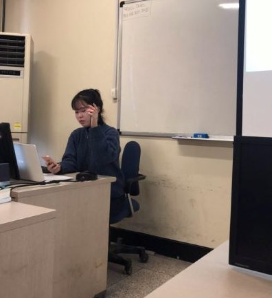
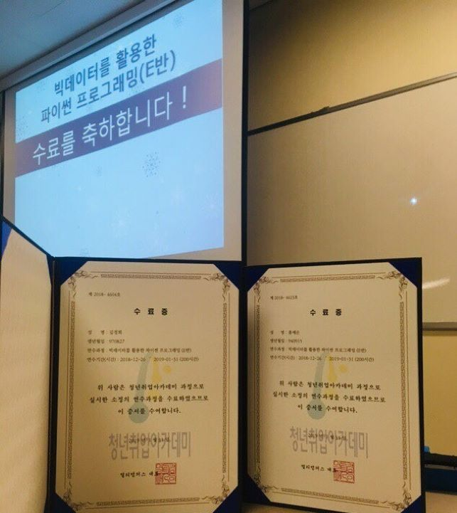

청년취업 아카데미
파이썬의 개념과 이를 활용한 웹 페이지 만들기



파이썬의 개념과 이를 활용한 웹 페이지 만들기
| 활동 기간 | 2018.12 - 2019.1 |
| 주요 활동 | 파이썬의 전반적인 개념과 활용 팀을 이뤄 html과 css로 구현한 프론트 앤드를 sql의 데이터 베이스와 연동해 하나의 웹 페이지 구상 |
| 나의 역할 | 웹 페이지 기획(엔지니어 겸) 및 발표 marvel의 수많은 영화 관람 순서 및 관객들의 평가를 공유할 수 있는 웹 페이지를 만들어냄 |